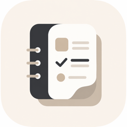
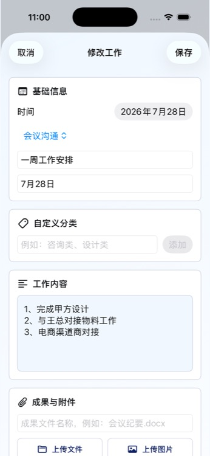
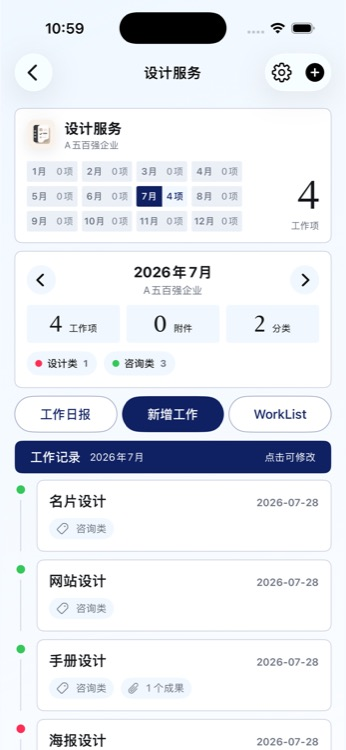
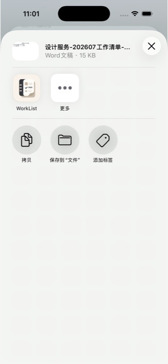
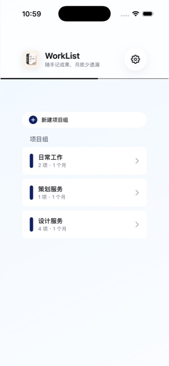
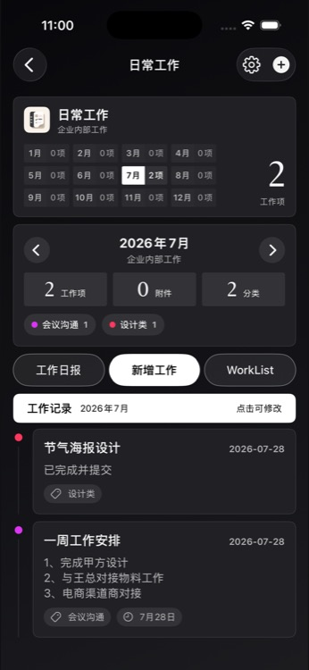
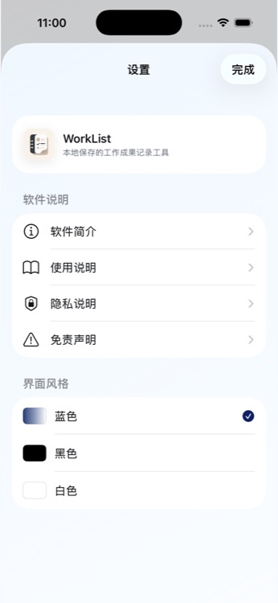

月底回忆不完整
重要工作随时补录，按月份自动归位，不再靠聊天记录拼凑。

工作清单WorkList按项目、月份和分类随手记录，归档文件与图片，到汇报时一键导出 Word 日报与工作清单。


把那些散落在记忆、微信和文件夹里的成果，在发生时就放回正确的位置。
重要工作随时补录，按月份自动归位，不再靠聊天记录拼凑。
把图片、文档与工作事项放在一起，项目交付过程清楚可查。
选择日期与范围，直接生成结构清晰的 Word 工作清单。
围绕真实工作场景设计，每一步都简单、直接。
按项目组管理工作，用月份、分类和时间快速定位。支持任意日期补录与修改，今天忙过的事不会留到月底再回忆。
文件、图片和交付成果直接归档到对应工作项。支持从微信或系统分享导入，需要时随时预览、分享。
可导出指定日期、当前月、近三个月、近六个月或全部工作，并支持按时间或分类汇总，生成真正的 Word 文档。

没有复杂设置，打开 App 就可以开始。
按客户、团队或项目创建独立分组。
写下工作内容，顺手归档文件和图片。
选择范围与顺序，生成 Word 后直接分享。



无需账号，没有广告 SDK 和行为追踪。项目、工作记录与附件默认保存在设备本地，不主动上传服务器。
不需要。当前版本没有账号系统，下载后即可使用。
不会主动上传。工作记录、分类与附件默认保存在设备本地；只有你主动使用系统分享功能时，文件才会交给你选择的其他应用。
支持指定日期的工作日报，以及当前月、近三个月、近六个月或全部工作的清单，并生成标准 .docx Word 文档。
可以。你可以通过微信的分享或“用其他应用打开”将文件转存到 WorkList，再归档到具体工作项。
当前版本不提供云端备份，卸载 App、设备损坏或系统抹除可能导致本地数据无法恢复。重要资料建议定期导出并自行备份。